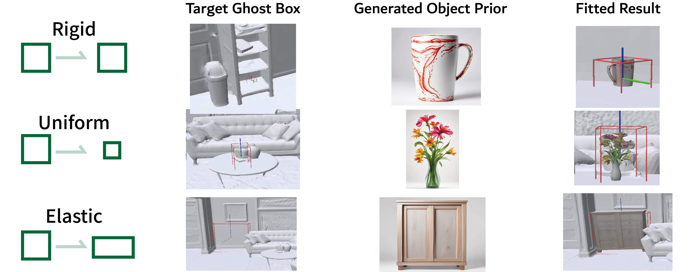
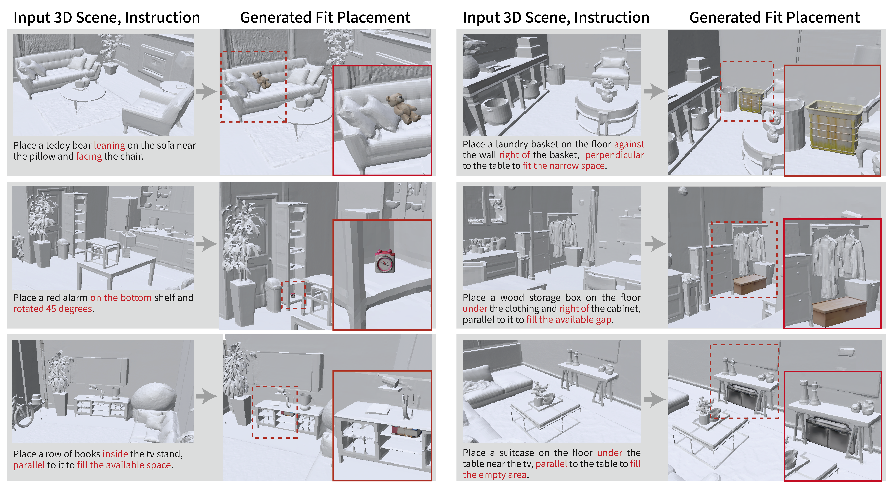

Given a language instruction and a 3D scene, ElasticFit reasons about where, what, and how to fit a generated object — adapting its geometry rigidly, uniformly, or elastically to make it fit the local space.
Abstract
Inserting objects into existing 3D scenes requires more than selecting a plausible location: the inserted object must also fit local geometry while preserving semantic intent and physical plausibility. Although recent Vision-Language Models (VLMs) and generative models enable semantic reasoning and visual content creation, they offer limited 3D grounding and geometric control when an inserted object must fit into constrained local spaces.
We introduce ElasticFit, a VLM-guided framework for fit-aware object insertion centered on a novel scene-grounded representation. Given a language instruction and rendered scene observations, ElasticFit infers structured fitting cues that specify where the object should be grounded, what volume it should occupy, how it should be oriented, and its adaptation mode — rigid placement, uniform scaling, or elastic deformation. These cues convert high-level VLM reasoning into explicit 3D constraints that condition object generation and guide downstream geometric fitting.
ElasticFit then generates a scene-conditioned object prior, reconstructs it in 3D, and refines the mesh through mode-specific fitting while enforcing collision avoidance, contact consistency, and physical grounding.
Method
ElasticFit operates in three stages: semantic-spatial grounding via Set-of-Mark VLM queries, scene-conditioned object generation using SDXL + TRELLIS, and geometry- and physics-aware fitting with three adaptation modes refined by PyBullet simulation.


Results
Evaluated on 120 tasks across ReplicaCAD and Replica datasets. Improves spatial relation success from 50.8% → 69.7% and support success from 48.3% → 91.7% over the strongest baseline (LayoutGPT).



BibTeX
@inproceedings{hsieh2026elasticfit,
title = {ElasticFit: Fit-Aware 3D Object Insertion via
VLM Reasoning and Generative Adaptation},
author = {Hsieh, Tzu-Hsin and Marroquim, Ricardo},
booktitle = {Advances in Neural Information Processing Systems},
year = {2026}
}